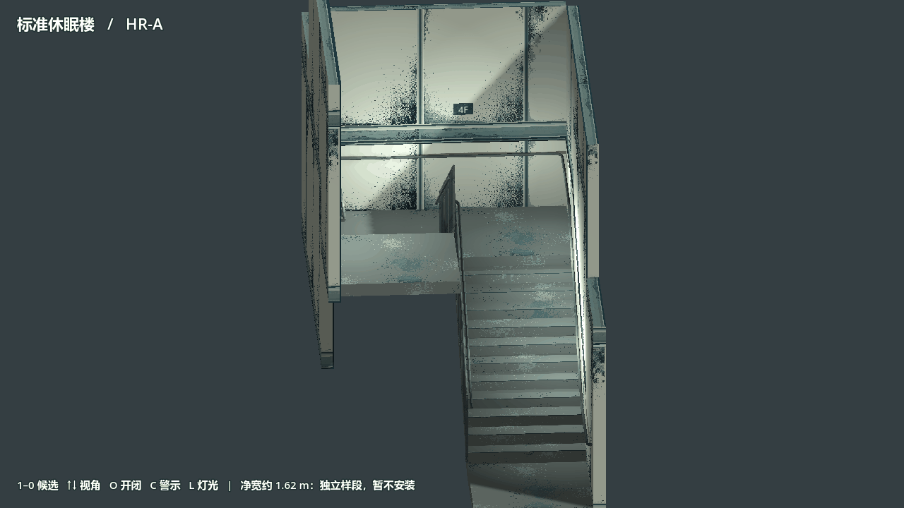

标准休眠楼｜建筑候选对比
ST-01｜楼梯与分区感应照明
双跑样段 · 打开 28 秒原尺寸 GIF（接近、停留、转身、离开与渐灭）
在页内播放 28 秒 GIF

- HR-A/B：扶手内缘净宽约 1.62 m，未达到冻结的 1.80 m；均是独立样段，暂不安装。
- FD-A/B：已核对独立样段的开合与碰撞，冻结楼梯平台上的整扇扫掠仍须在安装前验证。
- EL-A/B：均断电关闭；可穿过的 CAUTION 是显示层，门叶有碰撞。没有新增电梯功能。
- EN-A/B：均为 ASSET ONLY，首层外门没有确认的锚点。现有内核 D089–D096 是 2.4 m 旁通开口，缺门高及封闭门定义；K-01 保留这些通路，不在外墙或核心新装门。
- FA-A/B：共用冻结体量，地上 16 层＋地下 4 层。天气和外部照明是临时审图条件。独立场景使用实时光；正式光照图未重烘。